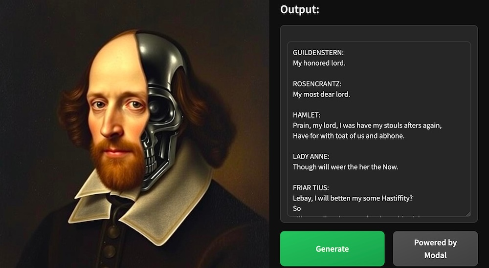
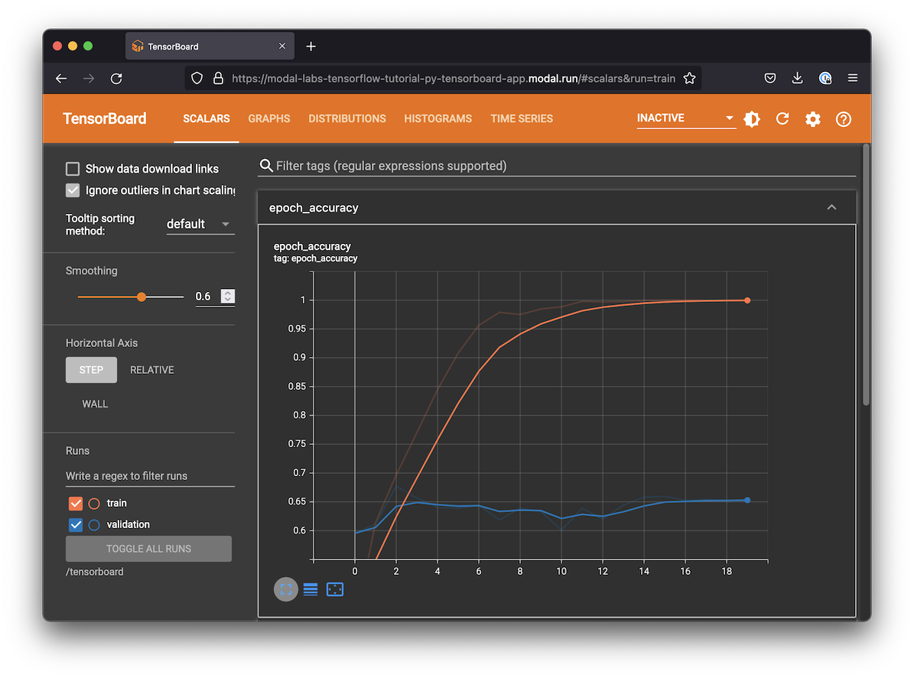
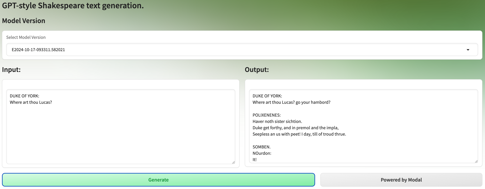

Train an SLM from scratch with early-stopping grid search over hyperparameters

When you want a language model that performs well on your task, there are three options, ordered by the degree of customization:
Prompt Engineering: large and capable language models understand tasks in natural language, so you can carefully design a natural language “prompt” to elicit the desired behavior.
Fine-Tuning: those same language models were trained by gradient descent on data sets representing tasks, and they can be further trained by gradient descent on data sets representative of your task.
Training from Scratch: if you have enough data for your task, you can throw the pretrained model away and make your own.
Each step adds additional engineering complexity, but also leads to a superior cost-performance Pareto frontier for your tasks. Fine-tuned models at one-tenth the size regularly outperform more generic models, and models trained from scratch outperform them.
Because these models are so much smaller than the Large Language Models that power generic assistant chatbots like ChatGPT and Claude, they are often called Small Language Models (SLMs).
In this example, we will explore training an SLM from scratch on Modal.
In fact, we’ll train 8 SLMs in parallel with different hyperparameters and then select the best one for additional training.
We’ll monitor this training live and serve our training and trained models as Web Functions and simple browser UIs.
Along the way we’ll use many features of the Modal platform: distributed Volumes, multiple Web Functions, and parallel container execution.
Together, these features give every machine learning and AI team the same infrastructural capabilities that the most sophisticated companies have in their internal platforms.
Basic Setup
import logging as L
import urllib.request
from dataclasses import dataclass
from pathlib import Path, PosixPath
from typing import Optional
import modal
from pydantic import BaseModel
MINUTES = 60 # seconds
HOURS = 60 * MINUTES
app_name = "example-hp-sweep-gpt"
app = modal.App(app_name)We’ll use A10G GPUs for training, which are able to train the model to recognizably improved performance in ~15 minutes while keeping costs under ~$1.
gpu = "A10G"Create a Volume to store data, weights, and logs
Since we’ll be coordinating training across multiple machines we’ll use a distributed Volume to store the data, checkpointed models, and TensorBoard logs.
volume = modal.Volume.from_name("example-hp-sweep-gpt-volume", create_if_missing=True)
volume_path = PosixPath("/vol/data")
model_filename = "nano_gpt_model.pt"
best_model_filename = "best_nano_gpt_model.pt"
tb_log_path = volume_path / "tb_logs"
model_save_path = volume_path / "models"Define dependencies in container images
The container image for training is based on Modal’s default slim Debian Linux image with torch for defining and running our neural network and tensorboard for monitoring training.
base_image = modal.Image.debian_slim(python_version="3.11").uv_pip_install(
"pydantic==2.9.1"
)
torch_image = base_image.uv_pip_install(
"torch==2.1.2",
"tensorboard==2.17.1",
"numpy<2",
)We also have some local dependencies that we’ll need to import into the remote environment. We add them into the remote container.
torch_image = torch_image.add_local_dir(
Path(__file__).parent / "src", remote_path="/root/src"
)We’ll serve a simple Web Function:
web_image = base_image.uv_pip_install("fastapi[standard]==0.115.4", "starlette==0.41.2")And we’ll deploy a web UI for interacting with our trained models using Gradio.
assets_path = Path(__file__).parent / "assets"
ui_image = web_image.uv_pip_install("gradio~=4.44.0").add_local_dir(
assets_path, remote_path="/assets"
)We can also “pre-import” libraries that will be used by the functions we run on Modal in a given image
using the with image.imports context manager.
with torch_image.imports():
import glob
import os
from timeit import default_timer as timer
import tensorboard
import torch
from src.dataset import Dataset
from src.logs_manager import LogsManager
from src.model import AttentionModel
from src.tokenizer import TokenizerRunning SLM training on Modal
Here we define the training function, wrapping it in a decorator
that specifies the infrastructural parameters, like the container image we want to use,
which volume to mount where, the gpu we’re using, and so on.
Training consists of specifying optimization parameters, loading the dataset, building the model, setting up TensorBoard logging &
checkpointing, and then finally executing the training_loop itself.
@app.function(
image=torch_image,
volumes={volume_path: volume},
gpu=gpu,
timeout=1 * HOURS,
)
def train_model(
node_rank,
n_nodes,
hparams,
experiment_name,
run_to_first_save=False,
n_steps=3000,
n_steps_before_eval=None,
n_steps_before_checkpoint=None,
):
# optimizer, data, and model prep
batch_size = 64
learning_rate = 3e-4
n_eval_steps = 100
if n_steps_before_eval is None:
n_steps_before_eval = int(n_steps / 8) # eval eight times per run
if n_steps_before_checkpoint is None:
n_steps_before_checkpoint = int(n_steps / 4) # save four times per run
train_percent = 0.9
L.basicConfig(
level=L.INFO,
format=f"\033[0;32m%(asctime)s %(levelname)s [%(filename)s.%(funcName)s:%(lineno)d] [Node {node_rank + 1}] %(message)s\033[0m",
datefmt="%b %d %H:%M:%S",
)
# use GPU if available
device = "cuda" if torch.cuda.is_available() else "cpu"
L.info("Remote Device: %s // GPU: %s", device, gpu)
input_file_path = volume_path / "shakespeare_char.txt"
text = prepare_data(input_file_path, volume)
# construct tokenizer & dataset
tokenizer = Tokenizer(text)
dataset = Dataset(
tokenizer.encode(text),
train_percent,
batch_size,
hparams.context_size,
device,
)
# build the model
model = build_model(hparams, tokenizer.vocab_size, device)
num_parameters = sum(p.numel() for p in model.parameters())
L.info(f"Num parameters: {num_parameters}")
optimizer = setup_optimizer(model, learning_rate)
# TensorBoard logging & checkpointing prep
logs_manager = LogsManager(experiment_name, hparams, num_parameters, tb_log_path)
L.info(f"Model name: {logs_manager.model_name}")
model_save_dir = model_save_path / experiment_name / logs_manager.model_name
if model_save_dir.exists():
L.info("Loading model from checkpoint...")
checkpoint = torch.load(str(model_save_dir / model_filename))
is_best_model = not run_to_first_save
if is_best_model:
make_best_symbolic_link(model_save_dir, model_filename, experiment_name)
model.load_state_dict(checkpoint["model"])
start_step = checkpoint["steps"] + 1
else:
model_save_dir.mkdir(parents=True, exist_ok=True)
start_step = 0
checkpoint = init_checkpoint(model, tokenizer, optimizer, start_step, hparams)
checkpoint_path = model_save_dir / model_filename
out = training_loop(
start_step,
n_steps,
n_steps_before_eval,
n_steps_before_checkpoint,
n_eval_steps,
dataset,
tokenizer,
model,
optimizer,
logs_manager,
checkpoint,
checkpoint_path,
run_to_first_save,
)
return node_rank, float(out["val"]), hparamsLaunch a hyperparameter sweep from a local_entrypoint
The main entry point coordinates the hyperparameter optimization.
First we specify the default hyperparameters for the model, taken from Andrej Karpathy’s walkthrough.
For better performance, you can increase the context_size and scale up the GPU accordingly.
@dataclass
class ModelHyperparameters:
n_heads: int = 6
n_embed: int = 384
n_blocks: int = 6
context_size: int = 256
dropout: float = 0.2Next we define the local entrypoint: the code we run locally to coordinate training.
It will train 8 models in parallel across 8 containers, each
with different hyperparameters, varying the number of heads (n_heads), the context_size (called the “block size” by Karpathy), and the dropout rate (dropout). To run in
parallel we need to use the starmap method.
We train all of the models until the first checkpoint and then stop early so we can compare the validation losses.
Then we restart training for the best model and train it to completion.
You can kick off training with the following command:
modal run 06_gpu_and_ml/hyperparameter-sweep/hp_sweep_gpt.pyThe output will look something like this:
Sep 16 21:20:39 INFO [hp_sweep_gpt.py.train_model:127] [Node 1] Remote Device: cuda // GPU: A10G
Sep 16 21:20:40 INFO [hp_sweep_gpt.py.train_model:149] [Node 1] Num parameters: 10693697
Sep 16 21:20:40 INFO [hp_sweep_gpt.py.train_model:156] [Node 1] Model Name: E2024-0916-142031.618259_context_size=8_n_heads=1_dropout=0.1
Sep 16 21:20:41 INFO [hp_sweep_gpt.py.train_model:225] [Node 1] 0) // 1.03s // Train Loss: 3.58 // Val Loss: 3.60
Sep 16 21:20:41 INFO [hp_sweep_gpt.py.train_model:127] [Node 2] Remote Device: cuda // GPU: A10G
...The local_entrypoint code is below. Note that the arguments to it can also be passed via the command line.
Use --help for details.
@app.local_entrypoint()
def main(
n_steps: int = 3000,
n_steps_before_checkpoint: Optional[int] = None,
n_steps_before_eval: Optional[int] = None,
):
from datetime import datetime
from itertools import product
experiment_name = f"E{datetime.now().strftime('%Y-%m-%d-%H%M%S.%f')}"
default_hparams = ModelHyperparameters()
# build list of hyperparameters to train & validate
nheads_options = (1, default_hparams.n_heads)
context_size_options = (8, default_hparams.context_size)
dropout_options = (0.1, default_hparams.dropout)
hparams_list = [
ModelHyperparameters(n_heads=h, context_size=c, dropout=d)
for h, c, d in product(nheads_options, context_size_options, dropout_options)
]
# run training for each hyperparameter setting
results = []
stop_early = True # stop early so we can compare val losses
print(f"Testing {len(hparams_list)} hyperparameter settings")
n_nodes = len(hparams_list)
static_params = (
experiment_name,
stop_early,
n_steps,
n_steps_before_eval,
n_steps_before_checkpoint,
)
for result in train_model.starmap(
[(i, n_nodes, h, *static_params) for i, h in enumerate(hparams_list)],
order_outputs=False,
):
# result = (node_rank, val_loss, hparams)
node_rank = result[0]
results.append(result)
print(
f"[Node {node_rank + 1}/{n_nodes}] Finished. Early stop val loss result: {result[1:]}"
)
# find the model and hparams with the lowest validation loss
best_result = min(results, key=lambda x: x[1])
print(f"Best early stop val loss result: {best_result}")
best_hparams = best_result[-1]
# finish training with best hparams
node_rank = 0
n_nodes = 1 # only one node for final training run
train_model.remote(
node_rank,
n_nodes,
best_hparams,
experiment_name,
not stop_early,
n_steps,
n_steps_before_eval,
n_steps_before_checkpoint,
)Monitor experiments with TensorBoard
To monitor our training we will create a TensorBoard WSGI web app, which will display the progress of our training across all 8 models. We’ll use the latest logs for the most recent experiment written to the Volume.
To ensure we have the latest data we add some WSGI Middleware that checks the Modal Volume for updates when the page is reloaded.
class VolumeMiddleware:
def __init__(self, app):
self.app = app
def __call__(self, environ, start_response):
if (route := environ.get("PATH_INFO")) in ["/", "/modal-volume-reload"]:
try:
volume.reload()
except Exception as e:
print("Exception while re-loading traces: ", e)
if route == "/modal-volume-reload":
environ["PATH_INFO"] = "/" # redirect
return self.app(environ, start_response)To ensure a unique color per experiment you can click the palette (🎨) icon
under TensorBoard > Time Series > Run and use the Regex: E(\d{4})-(\d{2})-(\d{2})-(\d{6})\.(\d{6})
You can deploy this TensorBoard service by running
modal deploy 06_gpu_and_ml/hyperparameter-sweep/hp_sweep_gpt.pyand visit it at the URL that ends with -monitor-training.modal.run.
After training finishes, your TensorBoard UI will look something like this:

You can also find some sample text generated by the model in the “Text” tab.
@app.function(
image=torch_image,
volumes={volume_path: volume},
)
@modal.concurrent(max_inputs=100)
@modal.wsgi_app()
def monitor_training():
board = tensorboard.program.TensorBoard()
board.configure(logdir=str(tb_log_path))
(data_provider, deprecated_multiplexer) = board._make_data_provider()
wsgi_app = tensorboard.backend.application.TensorBoardWSGIApp(
board.flags,
board.plugin_loaders,
data_provider,
board.assets_zip_provider,
deprecated_multiplexer,
experimental_middlewares=[VolumeMiddleware],
)
return wsgi_appNotice that there are 8 models training, and the one with the lowest validation loss at step 600 continues training to 3000 steps.
Serving SLMs on Modal during and after training
Because our weights are stored in a distributed Volume, we can deploy an inference Function based off of them without any extra work — and we can even check in on models while we’re still training them! # For more on storing model weights on Modal, see this guide.
Remote inference with Modal Clses
We wrap our inference in a Modal Cls called ModelInference.
The user of ModelInference can control which model is used by providing the experiment_name. Each unique choice creates a separate auto-scaling deployment.
If the user does not specify an experiment_name, the latest experiment
is used.
@app.cls(image=torch_image, volumes={volume_path: volume}, gpu=gpu)
class ModelInference:
experiment_name: str = modal.parameter(default="")
def get_latest_available_model_dirs(self, n_last):
"""Find the latest models that have a best model checkpoint saved."""
save_model_dirs = glob.glob(f"{model_save_path}/*")
sorted_model_dirs = sorted(save_model_dirs, key=os.path.getctime, reverse=True)
valid_model_dirs = []
for latest_model_dir in sorted_model_dirs:
if Path(f"{latest_model_dir}/{best_model_filename}").exists():
valid_model_dirs.append(Path(latest_model_dir))
if len(valid_model_dirs) >= n_last:
return valid_model_dirs
return valid_model_dirs
@modal.method()
def get_latest_available_experiment_names(self, n_last):
return [d.name for d in self.get_latest_available_model_dirs(n_last)]
def load_model_impl(self):
from .src.model import AttentionModel
from .src.tokenizer import Tokenizer
if self.experiment_name != "": # user selected model
use_model_dir = f"{model_save_path}/{self.experiment_name}"
else: # otherwise, pick latest
try:
use_model_dir = self.get_latest_available_model_dirs(1)[0]
except IndexError:
raise ValueError("No models available to load.")
if self.use_model_dir == use_model_dir and self.is_fully_trained:
return # already loaded fully trained model.
print(f"Loading experiment: {Path(use_model_dir).name}...")
checkpoint = torch.load(f"{use_model_dir}/{best_model_filename}")
self.use_model_dir = use_model_dir
hparams = checkpoint["hparams"]
key = ( # for backwards compatibility
"unique_chars" if "unique_chars" in checkpoint else "chars"
)
unique_chars = checkpoint[key]
steps = checkpoint["steps"]
val_loss = checkpoint["val_loss"]
self.is_fully_trained = checkpoint["finished_training"]
print(
f"Loaded model with {steps} train steps"
f" and val loss of {val_loss:.2f}"
f" (fully_trained={self.is_fully_trained})"
)
self.tokenizer = Tokenizer(unique_chars)
self.device = "cuda" if torch.cuda.is_available() else "cpu"
self.model = AttentionModel(self.tokenizer.vocab_size, hparams, self.device)
self.model.load_state_dict(checkpoint["model"])
self.model.to(self.device)
@modal.enter()
def load_model(self):
self.use_model_dir = None
self.is_fully_trained = False
self.load_model_impl()
@modal.method()
def generate(self, prompt):
self.load_model_impl() # load updated model if available
n_new_tokens = 1000
return self.model.generate_from_text(self.tokenizer, prompt, n_new_tokens)Adding a simple Web Function
The ModelInference class above is available for use
from any other Python environment with the right Modal credentials
and the modal package installed — just use lookup.
But we can also expose it as a Web Function for easy access from anywhere, including other programming languages or the command line.
class GenerationRequest(BaseModel):
prompt: str
@app.function(image=web_image)
@modal.fastapi_endpoint(method="POST", docs=True)
def web_generate(request: GenerationRequest):
output = ModelInference().generate.remote(request.prompt)
return {"output": output}This Function can be deployed on Modal with modal deploy.
That will allow us to generate text via a simple curl command like this:
curl -X POST -H 'Content-Type: application/json' --data-binary '{"prompt": "\n"}' https://your-workspace-name--modal-nano-gpt-web-generate.modal.runwhich will return something like:
{
"output":
"BRUTUS:
The broy trefore anny pleasory to
wip me state of villoor so:
Fortols listhey for brother beat the else
Be all, ill of lo-love in igham;
Ah, here all that queen and hould you father offer"
}It’s not exactly Shakespeare, but at least it shows our model learned something!
You can choose which model to use by specifying the experiment_name in the query parameters of the request URL.
Serving a Gradio UI with asgi_app
Second, we create a Gradio web app for generating text via a graphical user interface in the browser. That way our fellow team members and stakeholders can easily interact with the model and give feedback, even when we’re still training the model.
You should see the URL for this UI in the output of modal deploy or on your Modal app dashboard for this app.
The Gradio UI will look something like this:

@app.function(
image=ui_image,
max_containers=1,
volumes={volume_path: volume},
)
@modal.concurrent(max_inputs=100)
@modal.asgi_app()
def ui():
import gradio as gr
from fastapi import FastAPI
from fastapi.responses import FileResponse
from gradio.routes import mount_gradio_app
# call out to the inference in a separate Modal environment with a GPU
def generate(text="", experiment_name=""):
if not text:
text = "\n"
generated = ModelInference(experiment_name=experiment_name).generate.remote(
text
)
return text + generated
example_prompts = [
"DUKE OF YORK:\nWhere art thou Lucas?",
"ROMEO:\nWhat is a man?",
"CLARENCE:\nFair is foul and foul is fair, but who are you?",
"Brevity is the soul of wit, so what is the soul of foolishness?",
]
web_app = FastAPI()
# custom styles: an icon, a background, and a theme
@web_app.get("/favicon.ico", include_in_schema=False)
async def favicon():
return FileResponse("/assets/favicon.svg")
@web_app.get("/assets/background.svg", include_in_schema=False)
async def background():
return FileResponse("/assets/background.svg")
with open("/assets/index.css") as f:
css = f.read()
n_last = 20
experiment_names = ModelInference().get_latest_available_experiment_names.remote(
n_last
)
theme = gr.themes.Default(
primary_hue="green", secondary_hue="emerald", neutral_hue="neutral"
)
# add a Gradio UI around inference
with gr.Blocks(theme=theme, css=css, title="SLM") as interface:
# title
gr.Markdown("# GPT-style Shakespeare text generation.")
# Model Selection
with gr.Row():
gr.Markdown("## Model Version")
with gr.Row():
experiment_dropdown = gr.Dropdown(
experiment_names, label="Select Model Version"
)
# input and output
with gr.Row():
with gr.Column():
gr.Markdown("## Input:")
input_box = gr.Textbox( # input text component
label="",
placeholder="Write some Shakespeare like text or keep it empty!",
lines=10,
)
with gr.Column():
gr.Markdown("## Output:")
output_box = gr.Textbox( # output text component
label="",
lines=10,
)
# button to trigger inference and a link to Modal
with gr.Row():
generate_button = gr.Button("Generate", variant="primary", scale=2)
generate_button.click(
fn=generate,
inputs=[input_box, experiment_dropdown],
outputs=output_box,
) # connect inputs and outputs with inference function
gr.Button( # shameless plug
" Powered by Modal",
variant="secondary",
link="https://modal.com",
)
# example prompts
with gr.Column(variant="compact"):
# add in a few examples to inspire users
for ii, prompt in enumerate(example_prompts):
btn = gr.Button(prompt, variant="secondary")
btn.click(fn=lambda idx=ii: example_prompts[idx], outputs=input_box)
# mount for execution on Modal
return mount_gradio_app(
app=web_app,
blocks=interface,
path="/",
)Addenda
The remainder of this code is boilerplate.
Training Loop
There’s quite a lot of code for just the training loop! If you’d rather not write this stuff yourself, consider a training framework like PyTorch Lightning or Hugging Face.
def training_loop(
start_step,
n_steps,
n_steps_before_eval,
n_steps_before_checkpoint,
n_eval_steps,
dataset,
tokenizer,
model,
optimizer,
logs_manager,
checkpoint,
checkpoint_path,
run_to_first_save,
):
@torch.no_grad()
def eval_model(model, dataset, tokenizer, n_eval_steps):
"""Evaluate model on train and validation data."""
out = {}
model.eval() # Turn off gradients
for split in ("train", "val"):
losses = torch.zeros(n_eval_steps)
for k in range(n_eval_steps):
xb, yb = dataset.get_batch(split)
logits, loss = model.forward(xb, yb)
losses[k] = loss
out[split] = losses.mean()
# Generate some output samples
out["sample"] = model.generate_from_text(tokenizer, "\n", 1000)
model.train() # Turn on gradients
return out
t_last = timer()
for step in range(start_step, n_steps + 1):
# sample a batch of data
xb, yb = dataset.get_batch("train")
# evaluate the loss, calculate & apply gradients
logits, loss = model.forward(xb, yb)
optimizer.zero_grad(set_to_none=True)
loss.backward()
optimizer.step()
# log training loss
logs_manager.add_train_scalar("Cross Entropy Loss", loss.item(), step)
# evaluate model on validation set
if step % n_steps_before_eval == 0:
out = eval_model(model, dataset, tokenizer, n_eval_steps)
log_evals(out, step, t_last, logs_manager)
t_last = timer()
# save model with checkpoint information
if step > 0 and step % n_steps_before_checkpoint == 0:
checkpoint["steps"] = step
checkpoint["val_loss"] = out["val"]
# mark as finished if we hit n steps.
checkpoint["finished_training"] = step >= n_steps
L.info(
f"Saving checkpoint to {checkpoint_path}\t {checkpoint['finished_training']})"
)
save_checkpoint(checkpoint, checkpoint_path)
if run_to_first_save:
L.info("Stopping early...")
break
return out
def save_checkpoint(checkpoint, checkpoint_path):
torch.save(checkpoint, checkpoint_path)
volume.commit()
def build_model(hparams, vocab_size, device):
"""Initialize the model and move it to the device."""
model = AttentionModel(vocab_size, hparams, device)
model.to(device)
return model
def setup_optimizer(model, learning_rate):
"""Set up the optimizer for the model."""
return torch.optim.AdamW(model.parameters(), lr=learning_rate)Miscellaneous
The remaining code includes small helper functions for training the model.
def prepare_data(input_file_path: Path, volume: modal.Volume) -> str:
"""Download and read the dataset."""
volume.reload()
if not input_file_path.exists():
L.info("Downloading Shakespeare dataset...")
data_url = "https://raw.githubusercontent.com/karpathy/char-rnn/master/data/tinyshakespeare/input.txt"
urllib.request.urlretrieve(data_url, input_file_path)
volume.commit()
return input_file_path.read_text()
def make_best_symbolic_link(model_save_dir, model_filename, experiment_name):
# create symlink to the best model so it's easy to find for web serving
os.symlink(
str(model_save_dir / model_filename),
str(model_save_path / experiment_name / best_model_filename),
)
volume.commit() # commit the symlink
def init_checkpoint(model, tokenizer, optimizer, start_step, hparams):
return {
"model": model.state_dict(),
"unique_chars": tokenizer.unique_chars,
"optimizer": optimizer.state_dict(),
"val_loss": float("inf"),
"steps": start_step,
"hparams": hparams,
"finished_training": False,
}
def log_evals(result, step, t_last, logs_manager):
runtime_s = timer() - t_last
L.info(
f"{step:5d}) // {runtime_s:>5.2f}s // Train Loss: {result['train']:.2f} // Val Loss: {result['val']:.2f}"
)
logs_manager.add_val_scalar("Cross Entropy Loss", result["val"], step)
logs_manager.add_val_text("Sample Output", result["sample"], step)
logs_manager.flush()
volume.commit() # Make sure TensorBoard container will see it.
return result